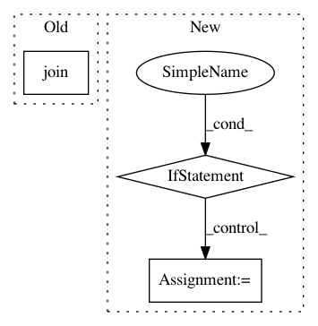

649b8e68235a5fa3e29eaaa2a7a7a75a4eba6187,demo/load_model/load_and_pool.py,,,#,9
Before Change
model_path = sys.argv[1]
config_path = os.path.join(model_path, "bert_config.json")
checkpoint_path = os.path.join(model_path, "bert_model.ckpt")
dict_path = os.path.join(model_path, "vocab.txt")
model = load_trained_model_from_checkpoint(config_path, checkpoint_path, seq_len=10)
pool_layer = MaskedGlobalMaxPool1D(name="Pooling")(model.output)
After Change
print("This demo demonstrates how to load the pre-trained model and extract the sentence embedding with pooling.")
if len(sys.argv) == 2:
model_path = sys.argv[1]
else:
from keras_bert.datasets import get_pretrained, PretrainedList
model_path = get_pretrained(PretrainedList.chinese_base)
paths = get_checkpoint_paths(model_path)
model = load_trained_model_from_checkpoint(paths.config, paths.checkpoint, seq_len=10)
pool_layer = MaskedGlobalMaxPool1D(name="Pooling")(model.output)
In pattern: SUPERPATTERN
Frequency: 3
Non-data size: 3
Instances
Project Name: CyberZHG/keras-bert
Commit Name: 649b8e68235a5fa3e29eaaa2a7a7a75a4eba6187
Time: 2019-06-21
Author: 853842+CyberZHG@users.noreply.github.com
File Name: demo/load_model/load_and_pool.py
Class Name:
Method Name:
Project Name: CyberZHG/keras-bert
Commit Name: 649b8e68235a5fa3e29eaaa2a7a7a75a4eba6187
Time: 2019-06-21
Author: 853842+CyberZHG@users.noreply.github.com
File Name: demo/load_model/load_and_extract.py
Class Name:
Method Name:
Project Name: apple/coremltools
Commit Name: 169159b9cc03d1c5acb4a34d1aad2d8abafd0cf1
Time: 2019-07-11
Author: aseem.elec@gmail.com
File Name: coremltools/converters/tensorflow/test/test_base.py
Class Name: TFNetworkTest
Method Name: _test_tf_model